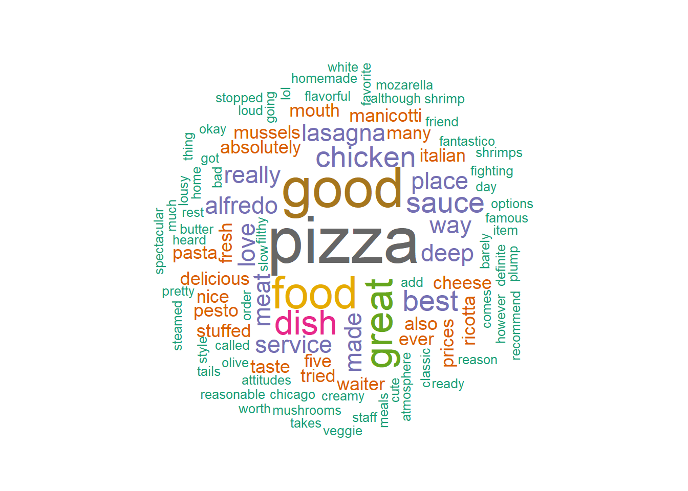
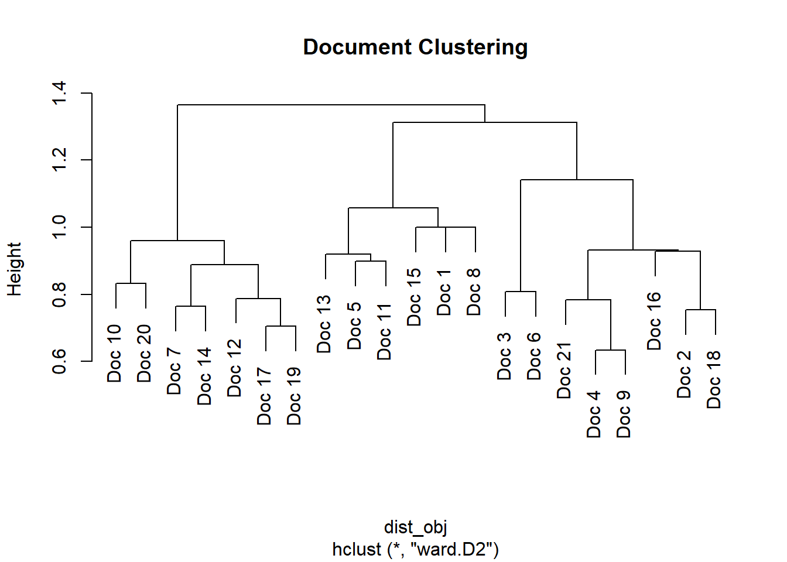

MBA Business Analytics · R · Text Mining · Trimester I
Customer Review Analysis
using Text Mining in R
A text-mining study of 21 customer reviews of a restaurant, built in R using the tm package for the full NLP pipeline — corpus construction, cleaning, document-term matrix, cosine similarity, hierarchical clustering, and a word-cloud visualisation. Submitted as part of Introduction to Business Analytics (MBA Trimester I, Amrita School of Business, Aug 2025). Published on personal blog and rendered as a complete Quarto HTML report.
MBA Year 1 · IBA
R · tm package
Cosine Similarity
Document Clustering
Word Cloud · wordcloud package
21 reviews
Customer feedback documents processed
185 terms
Unique vocabulary after cleaning
93%
Document-Term Matrix sparsity
tm + slam
R text-mining packages used
Context
From raw reviews to actionable themes
The Data
reviews.csv — 21 customer reviews of an Italian restaurant. Free-form text, varied lengths, mixed sentiment, real spelling variation. The kind of unstructured data that customer-experience teams sit on without knowing what to do with.
The Question
Can we go from raw text to structured insight — without reading every review manually? What words dominate? Which reviews are similar to which? Are there clusters of feedback (e.g., service complaints vs. food praise)?
My Approach
Full R text-mining pipeline: build a VCorpus → clean (lowercase, remove punctuation/numbers/stopwords/whitespace) → construct a Document-Term Matrix → compute cosine similarity between reviews → cluster the documents → visualise term frequency with a word cloud.
What I Took Away
Text mining is 90% pre-processing, 10% insight. The raw vocabulary collapses dramatically after cleaning (stop words alone remove the majority). The interesting result isn't the most common word — it's the cosine-similarity matrix showing which reviews echo each other, revealing themes the eye would miss.
Step 1 — Corpus & Cleaning
From CSV to a clean text corpus
The first job of any text-mining project is to turn messy human writing into something a computer can count. R's tm package gives a clean abstraction: a Corpus wraps a collection of documents, and tm_map applies a transformation across all of them at once.
library(tm)
library(slam)
library(proxy)
library(wordcloud)
library(RColorBrewer)
# Load reviews and build a corpus
services <- read.csv("reviews.csv", header = TRUE)
texts <- services$Review
corpus <- VCorpus(VectorSource(texts))
# Clean the corpus — order matters
corpus <- tm_map(corpus, content_transformer(tolower))
corpus <- tm_map(corpus, removePunctuation)
corpus <- tm_map(corpus, removeNumbers)
corpus <- tm_map(corpus, removeWords, stopwords("en"))
corpus <- tm_map(corpus, stripWhitespace)
Why order matters
If you removed punctuation after stopword removal, contractions like "don't" would survive as "dont" — which isn't in the standard English stopword list and would skew term frequency. Doing punctuation first, then stopwords, gives cleaner results. Small detail; big difference.
Step 2 — Document-Term Matrix
Quantifying what each review talks about
The Document-Term Matrix (DTM) is the structural unit of text mining: rows are documents (reviews), columns are terms (words), cells are term frequencies. From 21 reviews and 185 unique terms, the DTM had 254 non-sparse entries vs 3,631 sparse — 93% sparsity, typical for short text.
dtm <- DocumentTermMatrix(corpus)
inspect(dtm)
# <<DocumentTermMatrix (documents: 21, terms: 185)>>
# Non-/sparse entries: 254/3631
# Sparsity : 93%
# Maximal term length: 11
# Weighting : term frequency (tf)
#
# Sample: alfredo best chicken food great pizza sauce
# Doc 10 1 0 1 1 0 1 0
# Doc 12 0 1 0 1 0 2 0
# Doc 19 0 1 2 0 0 2 0
Each row shows how many times each term appears in that document. Doc 12 says "pizza" twice; Doc 19 says "chicken" twice and "pizza" twice. From the DTM alone, you can already see this is a restaurant where pizza dominates the conversation — but the more interesting question is which reviews share themes.
Step 3 — Cosine Similarity
Comparing reviews by the angle between their term-vectors
Every review is a point in 185-dimensional term space. Cosine similarity measures the angle between two such vectors — values close to 1 mean nearly identical content, close to 0 means completely different. It's the standard distance metric for text because it ignores document length (a long review and a short one can still be "about the same thing").
# Compute cosine similarity using slam (efficient for sparse matrices)
numerator <- crossprod_simple_triplet_matrix(dtm)
denominator <- sqrt(col_sums(dtm^2)) %*%
t(sqrt(col_sums(dtm^2)))
cosine_similarity <- numerator / denominator
cosine_distance <- 1 - cosine_similarity
# Convert to a regular matrix for inspection
cosine_dist_matrix <- as.matrix(cosine_distance)
Step 4 — Visualisation
Two ways to see what 21 reviews are saying

Fig 1 — Word cloud (wordcloud package + RColorBrewer). Word size proportional to term frequency across all 21 reviews. "pizza" and "good" dominate, with "food", "great", "chicken", "dish", and "sauce" as secondary themes. Negative terms ("bad", "lousy", "slow", "filthy") appear but are small — sentiment skews positive.

Fig 2 — Document Clustering (Ward.D2 hierarchical clustering on the cosine-distance matrix). Reviews that share vocabulary cluster together — Doc 10 with Doc 20, Doc 17 with Doc 19, etc. This is what lets a customer-experience team go from "21 reviews" to "3-4 themes worth investigating."
Why this matters
Connecting NLP to business decisions
01
From "we have 21 reviews" to "we have 4 themes." The document-clustering step is the value: it converts an unmanageable pile of free text into a manageable list of themes that a manager can act on.
02
The same pipeline scales to 21,000 reviews. Nothing in the code changes between 21 reviews and 21,000 — only the runtime. This is what production text analytics looks like at companies that take customer feedback seriously.
03
Connecting to operations. The exact same pipeline can be repurposed for plant operator log analysis — clustering shift handover notes to find recurring issues. The technique transfers directly from restaurant reviews to power-plant operations.
04
Honest limits. Cosine similarity is bag-of-words — it ignores word order. "Service was good, food was bad" and "Food was good, service was bad" look identical to this model. For richer analysis, you'd move to TF-IDF weighting, n-grams, or word embeddings (next-level techniques covered in DARP coursework).
Files
Source & data — all downloadable
A note on this work
This was a
graded MBA submission for the
Introduction to Business Analytics course at Amrita School of Business (Trimester I, Aug 2025). The reviews dataset was provided by the instructor; the cleaning pipeline, cosine-similarity computation, clustering and word-cloud analysis are my own work. The full Quarto source and rendered report are downloadable above. The project is also
published on my MBA blog for direct verification.